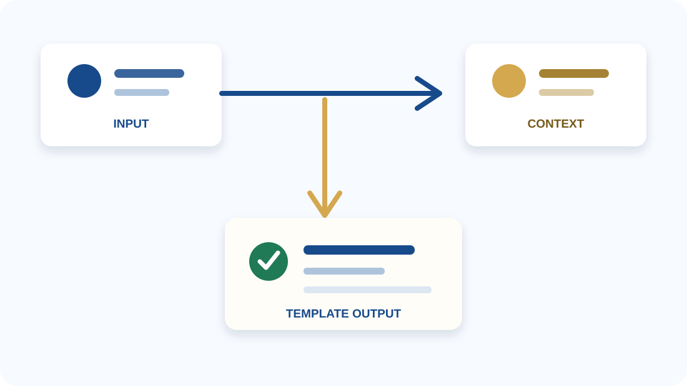

<div class="slide-frame slide-frame--cover"> <div class="cover-content"> <div class="cover-kicker">浙江大学 · Reveal-md Template</div> <h1 class="cover-title">标题占位符<br />与容器使用示例</h1> <div class="cover-rule"></div> <div class="cover-subtitle">用一页说明主题、目的或结论</div> <div class="cover-meta">汇报人：姓名占位符</div> <div class="cover-meta">学院 / 方向：信息占位符</div> <div class="cover-meta">日期：YYYY 年 MM 月 DD 日</div> </div> </div> <!--s--> <div class="slide-frame slide-frame--page agenda-frame"> <h2 class="page-title">容器目录</h2> <div class="agenda-list"> <div class="agenda-index">01</div> <div class="agenda-item">基础布局与信息容器</div> <div class="agenda-index">02</div> <div class="agenda-item">页面布局与媒体容器</div> <div class="agenda-index">03</div> <div class="agenda-item">流程、表格与验证容器</div> </div> <div class="agenda-note">每页只展示一组相关容器；复制结构后替换文字和图片即可。</div> </div> <!--s--> <div class="slide-frame slide-frame--section"> <div class="section-eyebrow">01 基础布局 · Basic Layout</div> <div class="section-body"> <div class="section-title">基础信息容器</div> <div class="section-note">封面、目录、分割页和信息卡片是所有页面的基础。</div> </div> </div> <!--v--> <div class="slide-frame slide-frame--page"> <h2 class="page-title">1.1 个人信息容器</h2> <div class="profile-layout"> <div class="profile-card"> <div> <div class="profile-name">姓名占位符</div> <div class="profile-role">浙江大学 · 学院占位符<br />专业 / 方向占位符</div> </div> </div> <div class="profile-content"> <div class="metric-grid"> <div class="metric-card"><div class="metric-value">01</div><div class="metric-label">数据标签</div></div> <div class="metric-card metric-card--gold"><div class="metric-value">02</div><div class="metric-label">数据标签</div></div> <div class="metric-card metric-card--green"><div class="metric-value">03</div><div class="metric-label">数据标签</div></div> </div> <div class="content-block"> <div class="content-block__title">要点标签</div> <ul class="tag-list"> <li class="tag-list__item">示例标签一</li> <li class="tag-list__item">示例标签二</li> <li class="tag-list__item">示例标签三</li> <li class="tag-list__item">示例标签四</li> </ul> </div> <div class="content-block"> <div class="content-block__title">补充信息</div> <ul class="bullet-list"> <li class="bullet-list__item">经历、荣誉或关键词</li> <li class="bullet-list__item">每条内容保持简短清晰</li> <li class="bullet-list__item">不需要的条目可以删除</li> <li class="bullet-list__item">第四个方框</li> </ul> </div> </div> </div> </div> <!--v--> <div class="slide-frame slide-frame--page"> <h2 class="page-title">1.2 双栏信息卡片</h2> <div class="info-banner"> <div class="info-banner__title">模块标题占位符</div> <div class="info-banner__meta">副标题 / 时间 / 标签</div> </div> <div class="feature-grid"> <div class="feature-card"> <div class="feature-title">内容模块 A</div> <div class="feature-question">用一句话说明这个模块要解决的问题。</div> <div class="feature-line"><b>重点：</b>填写三到五个关键词。</div> <div class="feature-line"><b>说明：</b>补充背景、方法或结果。</div> <div class="feature-tags"><span class="feature-tag">标签 A</span><span class="feature-tag">标签 B</span><span class="feature-tag">标签 C</span></div> </div> <div class="feature-card feature-card--gold"> <div class="feature-title">内容模块 B</div> <div class="feature-question">用一句话描述另一个并列模块。</div> <div class="feature-line"><b>输入：</b>信息或资源占位符。</div> <div class="feature-line"><b>输出：</b>结论或交付物占位符。</div> <div class="feature-tags"><span class="feature-tag">状态</span><span class="feature-tag">时间</span></div> </div> </div> <div class="focus-grid"> <div class="focus-card"><div class="focus-title">关键词 A</div><div class="focus-note">一句简短解释。</div></div> <div class="focus-card focus-card--gold"><div class="focus-title">关键词 B</div><div class="focus-note">一句简短解释。</div></div> <div class="focus-card focus-card--green"><div class="focus-title">关键词 C</div><div class="focus-note">一句简短解释。</div></div> </div> </div> <!--s--> <div class="slide-frame slide-frame--section"> <div class="section-eyebrow">02 视觉组件 · Visual Components</div> <div class="section-body"> <div class="section-title">页面布局与媒体容器</div> <div class="section-note">先选择页面结构，再把文字、表格或图片放入对应区域。</div> </div> </div> <!--v--> <div class="slide-frame slide-frame--page"> <h2 class="page-title">2.1 媒体容器</h2> <div class="split-layout"> <div class="compare-stack"> <div class="compare-card"> <div class="compare-title">图片使用方式</div> <div class="compare-row"><b>文件</b><span>放入 assets 文件夹</span></div> <div class="compare-row"><b>引用</b><span>使用相对路径</span></div> <div class="compare-row"><b>替换</b><span>保留 alt 文本并同步更新说明</span></div> </div> <div class="compare-card compare-card--accent"> <div class="compare-title">配文方式</div> <div class="compare-row"><b>标题</b><span>说明图片展示的对象</span></div> <div class="compare-row"><b>图注</b><span>补充读者需要关注的结论</span></div> </div> </div> <div class="figure-frame"> <p></p> <div class="figure-caption">一张图对应一个观点，图片下方保留一句说明。</div> </div> </div> <div class="callout">框架图、数据图表和分析图都可以复用这个媒体容器，不需要为每种图片单独建立一套页面。</div> </div> <!--v--> <div class="slide-frame slide-frame--page"> <h2 class="page-title">2.2 上下布局结构</h2> <div class="stack-layout"> <div class="stack-visual"> <div class="stack-visual__label">图片 / 图表区域</div> <div class="stack-visual__path">assets/example.svg</div> </div> <div class="stack-points"> <div class="stack-point"><b>01 内容</b><span>标题和核心信息</span></div> <div class="stack-point"><b>02 证据</b><span>一个关键数字或观察</span></div> <div class="stack-point"><b>03 解释</b><span>一句话说明原因</span></div> <div class="stack-point"><b>04 结论</b><span>读者应该记住的内容</span></div> </div> </div> <div class="layout-note">上方放一块主视觉区域，下方用四个同宽要点补充阅读线索。把图片替换进去即可恢复原始的“上图下卡片”结构。</div> </div> <!--v--> <div class="slide-frame slide-frame--page"> <h2 class="page-title">2.3 左右布局结构</h2> <div class="layout-split"> <div class="layout-panel"> <div class="layout-panel__label">LEFT · CONTEXT</div> <div class="layout-panel__title">背景与输入</div> <div class="layout-panel__line">放置问题、限制条件或已有信息。</div> <div class="layout-panel__line">正文保持短句，避免挤压右侧重点。</div> </div> <div class="layout-panel layout-panel--gold"> <div class="layout-panel__label">RIGHT · OUTPUT</div> <div class="layout-panel__title">结果与结论</div> <div class="layout-panel__line">放置一条观察、一个结论或下一步。</div> <div class="layout-panel__line">用金色强调需要读者带走的信息。</div> </div> </div> <div class="layout-note">左右布局适合表达“背景—结果”“问题—回答”或“方法—结论”等关系。</div> </div> <!--v--> <div class="slide-frame slide-frame--page"> <h2 class="page-title">2.4 三栏布局结构</h2> <div class="task-grid"> <div class="task-card"> <div class="task-header"><div class="task-name">基础</div><div class="task-index">01</div></div> <div class="task-example">放置一个短例子</div> <div class="task-detail">补充一行上下文。</div> <div class="task-goal">说明这一列想表达的核心观点。</div> </div> <div class="task-card task-card--gold"> <div class="task-header"><div class="task-name">重点</div><div class="task-index">02</div></div> <div class="task-example">突出一个关键词</div> <div class="task-detail">用两行文字解释，不堆叠完整段落。</div> <div class="task-goal">说明读者应该记住什么。</div> </div> <div class="task-card task-card--green"> <div class="task-header"><div class="task-name">行动</div><div class="task-index">03</div></div> <div class="task-example">给出下一步</div> <div class="task-detail">说明时间、负责人或预期结果。</div> <div class="task-goal">把信息转化成明确的行动。</div> </div> </div> <div class="stat-strip"> <div class="stat-item"><span class="stat-value">03</span><span class="stat-label">Cards</span></div> <div class="stat-item"><span class="stat-value">01</span><span class="stat-label">Key Point</span></div> <div class="stat-item"><span class="stat-value">02</span><span class="stat-label">Next Steps</span></div> </div> <div class="task-coverage"> <div><b>输入</b><span>交代背景、约束或已有信息。</span></div> <div><b>重点</b><span>突出读者最需要记住的一条判断。</span></div> <div><b>输出</b><span>用一句结论承接到下一页。</span></div> </div> </div> <!--v--> <div class="slide-frame slide-frame--page"> <h2 class="page-title">2.5 复合布局结构</h2> <div class="composite-layout"> <div class="composite-main"> <div class="info-banner"> <div class="info-banner__title">主内容区域</div> <div class="info-banner__meta">标题 / 背景 / 关键说明</div> </div> <div class="info-list"> <div class="info-row"><b>输入</b><span>先交代读者需要知道的背景。</span></div> <div class="info-row info-row--gold"><b>判断</b><span>突出页面最重要的一条观察。</span></div> <div class="info-row info-row--green"><b>输出</b><span>用一句结论承接到下一页。</span></div> </div> </div> <div class="composite-side"> <div class="focus-card"><div class="focus-title">侧栏提示</div><div class="focus-note">放置定义、口径或补充信息。</div></div> <div class="focus-card focus-card--gold"><div class="focus-title">视觉重点</div><div class="focus-note">用颜色和留白建立阅读顺序。</div></div> </div> </div> <div class="layout-note">复合布局把主内容、侧栏提示和底部结论放在同一页，适合内容较多但层级清晰的页面。</div> </div> <!--v--> <div class="slide-frame slide-frame--page"> <h2 class="page-title">2.6 框架图布局结构</h2> <div class="framework-layout"> <div class="framework-visual"> <div class="framework-node"> <span>01 INPUT</span> <strong>背景与历史</strong> <small>汇总用户、任务或环境信息</small> </div> <div class="framework-arrow">→</div> <div class="framework-node framework-node--gold"> <span>02 AGENT</span> <strong>理解与执行</strong> <small>生成一个可解释的中间结果</small> </div> <div class="framework-arrow">→</div> <div class="framework-node framework-node--green"> <span>03 EVALUATE</span> <strong>反馈与判断</strong> <small>检查结果并决定下一步行动</small> </div> </div> <div class="framework-key"> <div class="framework-key-item"><b>输入</b><span>把任务所需的上下文放在流程起点。</span></div> <div class="framework-key-item"><b>主体</b><span>说明模型、方法或系统如何处理信息。</span></div> <div class="framework-key-item"><b>环境</b><span>补充交互对象、工具或运行场景。</span></div> <div class="framework-key-item"><b>输出</b><span>用一句话说明评价结果或下一步。</span></div> </div> </div> <div class="layout-note">框架图适合先展示信息流，再用下方四个说明项解释每个模块的职责。</div> </div> <!--s--> <div class="slide-frame slide-frame--section"> <div class="section-eyebrow">03 结构化表达 · Structured Story</div> <div class="section-body"> <div class="section-title">流程、表格与验证</div> <div class="section-note">复杂内容拆成顺序、对比和判断，读者会更容易跟上。</div> </div> </div> <!--v--> <div class="slide-frame slide-frame--page"> <h2 class="page-title">3.1 研究动机</h2> <div class="motivation-flow"> <div class="motivation-node"><div class="motivation-node-title">用户历史</div><div>从行为记录中观察稳定偏好</div></div> <div class="motivation-arrow">→</div> <div class="motivation-node"><div class="motivation-node-title">模糊任务</div><div>“帮我完成一个相关任务”</div></div> <div class="motivation-arrow">→</div> <div class="motivation-node"><div class="motivation-node-title">Draft</div><div>生成一个符合上下文的候选结果</div></div> <div class="motivation-arrow">→</div> <div class="motivation-node motivation-node--gold"><div class="motivation-node-title">Verification</div><div>判断候选结果是否满足目标</div></div> </div> <div class="motivation-bottom"> <div class="motivation-note"> <div class="case-title">研究背景</div> <div class="motivation-brief-lead">如何让模型从历史行为中提取可复用的偏好？</div> <div class="motivation-brief-row"><b>输入</b><span>用户历史 + 模糊任务</span></div> <div class="motivation-brief-row"><b>难点</b><span>区分偶然行为与稳定偏好</span></div> <div class="motivation-brief-foot"><b>验证能力可以反过来帮助生成能力。</b> 先判断，再改进候选结果。</div> </div> <div class="research-question"> <div class="question-lead">核心问题</div> <div class="motivation-question-main">能否让 Verify 判断 Draft 是否合理，并把判断结果转成生成信号？</div> <div class="motivation-question-note">模板提示：把右侧问题替换成你的研究假设、设计目标或页面结论。</div> </div> </div> </div> <!--v--> <div class="slide-frame slide-frame--page"> <h2 class="page-title">3.2 偏好数据构造</h2> <div class="data-layout"> <div class="numbered-flow"> <div class="flow-step"><span class="step-no">1</span><div class="flow-step-body">收集历史行为与任务上下文</div></div> <div class="flow-step"><span class="step-no">2</span><div class="flow-step-body">把目标行为改写成模糊任务</div></div> <div class="flow-step"><span class="step-no">3</span><div class="flow-step-body">确定任务需要的 Preference Slots</div></div> <div class="flow-step"><span class="step-no">4</span><div class="flow-step-body">检索并聚合相关历史证据</div></div> <div class="flow-step"><span class="step-no">5</span><div class="flow-step-body">输出可解释的 Preference Label</div></div> </div> <div class="preference-example"> <div class="preference-example-title">一个偏好标签示例</div> <div class="preference-intent"><span>Intent</span><b>完成一个外卖平台任务</b></div> <div class="preference-intent preference-intent--derived"><span>Instruction</span><b>帮我处理一个外卖订单</b></div> <div class="evidence-title">历史证据</div> <div class="evidence-list"> <div><span>平台 A</span><b>10 次</b><i style="width: 100%;"></i></div> <div><span>平台 B</span><b>7 次</b><i style="width: 70%;"></i></div> <div><span>平台 C</span><b>2 次</b><i style="width: 20%;"></i></div> </div> <div class="evidence-arrow">↓</div> <div class="slot-result"><span>Preference Slot</span><b>platform = A</b><small>从频次最高的候选值中提取稳定偏好</small></div> </div> </div> <div class="data-takeaway">把历史证据压缩成可解释的标签，便于 Draft 和 Verification 共同使用。</div> </div> <!--v--> <div class="slide-frame slide-frame--page"> <h2 class="page-title">3.3 验证与结论容器</h2> <div class="verify-idea"><b>核心想法</b><span>先提出一个可验证的判断，再用简短证据支持或修正它。</span></div> <div class="verify-layout verify-layout--compact"> <div class="verify-flow"> <div class="verify-row"> <div class="verify-label">Input</div> <div class="verify-copy"> <div class="verify-copy-title">背景信息与当前问题</div> <div class="verify-copy-sub">明确验证对象</div> </div> <div class="verify-target"><b>Evidence</b><br />列出一条关键证据</div> </div> <div class="verify-row verify-row--gold"> <div class="verify-label">Output</div> <div class="verify-copy"> <div class="verify-copy-title">支持、反对或待确认</div> <div class="verify-copy-sub">写出结论</div> </div> <div class="verify-target"><b>Next</b><br />给出下一步行动</div> </div> </div> <div class="verify-result"> <div class="verify-result__label">结论示例</div> <table class="verify-table"> <thead><tr><th>项目</th><th>示例</th><th>状态</th></tr></thead> <tbody> <tr><td>判断</td><td>目标清晰</td><td class="table-status table-status--done">通过</td></tr> <tr><td>证据</td><td>信息完整</td><td class="table-status table-status--done">通过</td></tr> <tr><td>下一步</td><td>补充细节</td><td class="table-status table-status--next">待办</td></tr> </tbody> </table> </div> </div> <div class="verify-conclusion">结论占位符：用一句话总结最重要的发现，避免重复整页内容。</div> </div> <!--v--> <div class="slide-frame slide-frame--page"> <h2 class="page-title">3.4 任务定义：Draft 与 Verification</h2> <div class="definition-header"><span>训练目标：生成候选结果，并判断其是否满足目标</span><b>方法 / 训练方式</b></div> <div class="definition-grid"> <div class="definition-card"> <h3>Draft 生成</h3> <div class="definition-flow"><div>历史信息 + 模糊任务</div><span>↓</span><div>Preference Draft</div><span>↓</span><div class="result">结构化候选结果</div></div> <div class="definition-line"><b>Input</b><span>历史与当前任务上下文</span></div> <div class="definition-line"><b>Output</b><span>当前任务所需的偏好或决策</span></div> <div class="definition-line"><b>Signal</b><span>候选结果与目标结果的差异</span></div> </div> <div class="definition-card definition-card--gold"> <h3>Verification</h3> <div class="definition-flow"><div>历史信息 + 模糊任务 + Draft</div><span>↓</span><div>Verification</div><span>↓</span><div class="result">Correct / Incorrect</div></div> <div class="definition-line"><b>Input</b><span>历史、任务与给定 Draft</span></div> <div class="definition-line"><b>Output</b><span>Draft 是否满足用户偏好</span></div> <div class="definition-line"><b>Signal</b><span>判断结果与监督信号的差异</span></div> </div> </div> </div> <!--v--> <div class="slide-frame slide-frame--page"> <h2 class="page-title">3.5 Self-Verify：以验证驱动生成</h2> <div class="verify-idea"><b>核心想法</b><span>让模型先生成 Draft，再用自身的 Verify 判断结果是否可靠，并把判断转成训练信号。</span></div> <div class="verify-hero-layout"> <div class="verify-process"> <div class="verify-section-label"><b>采用 Mix-Train</b><span>联合学习 Draft 与 Verify</span></div> <div class="verify-train-note">Verify 由 GT 监督；用 Self-Verify 代替原本方法中 Draft 的 GT Reward。</div> <div class="verify-training-flow"> <div class="verify-training-row"> <div class="verify-training-head">Draft</div> <div class="verify-training-copy">历史信息 + 模糊任务<br /><b>生成候选结果</b></div> <div class="verify-training-target"><b>Self-Verify</b> = Correct / Incorrect<br />Draft Reward = 1 / 0</div> </div> <div class="verify-training-row verify-training-row--gold"> <div class="verify-training-head">Verify</div> <div class="verify-training-copy">读取 Draft 与上下文<br /><b>判断是否符合目标</b></div> <div class="verify-training-target"><b>GT</b> 监督 Verify</div> </div> </div> </div> <div class="verify-results"> <div class="verify-section-label"><b>结果对比</b><span>Reward / Accuracy</span></div> <table class="verify-result-table"> <thead><tr><th>奖励信号</th><th>GT</th><th>Self-Verify</th></tr></thead> <tbody> <tr><td>Draft Reward</td><td>参考值</td><td>接近参考值</td></tr> <tr><td>判断结果</td><td>监督信号</td><td>自评信号</td></tr> <tr><td>适用方式</td><td>训练 Verify</td><td>辅助训练 Draft</td></tr> </tbody> </table> </div> </div> <div class="verify-conclusion">Self-Verify 让验证结果参与生成训练，同时保留 GT 对 Verify 的监督。</div> </div> <!--v--> <div class="slide-frame slide-frame--page"> <h2 class="page-title">3.6 对比表容器</h2> <div class="table-layout"> <div class="table-card"> <div class="table-card-title">信息对比示例</div> <table class="comparison-table"> <thead><tr><th>项目</th><th>选项 A</th><th>选项 B</th></tr></thead> <tbody> <tr><td>速度</td><td>标准</td><td>快速</td></tr> <tr><td>细节</td><td>紧凑</td><td>丰富</td></tr> <tr><td>适用</td><td>概览</td><td>决策</td></tr> </tbody> </table> </div> <div class="table-card table-card--accent"> <div class="table-card-title">阅读规则</div> <div class="table-rule"><b>维度</b><span>只保留会影响选择的项目。</span></div> <div class="table-rule"><b>强调</b><span>用表头和底色突出推荐选项。</span></div> <div class="table-rule"><b>结论</b><span>表格下方写出比较结果。</span></div> </div> </div> <div class="table-conclusion">对比表只保留会影响决策的维度，并用颜色强调推荐选项。</div> </div> <!--s--> <div class="slide-frame slide-frame--closing"> <div class="closing-content"> <div class="closing-title">感谢阅读</div> <div class="closing-note">Q&A</div> </div> </div>